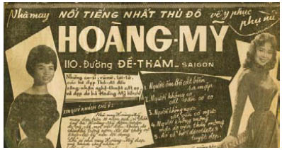

Họ đã đến nơi. Cáo bước lùi khỏi hàng rào mà những người nông dân dựng lên quanh vùng đất của mình để giữ cho bầy gia súc không đi lạc giữa đống đổ nát bị yểm bùa. Cơn gió thổi tới từ những con đường chết chóc tạt vào mặt cô mưa băng đá. Trong đêm tối tất cả những thứ xung quanh cô đều viết lên một từ: Thảm họa.
Đám đàn ông đang đi lên tháp canh bị bỏ hoang chính là những người Cáo đã thấy sau cửa chuồng ngựa của mụ phù thủy, dù vậy chỉ đến khi họ đến gần hơn, Cáo mới nhận ra gã Goyl không đi cùng bọn họ. Jacob cũng không.
“Bình tĩnh!” lão Valiant thì thầm với cô. “Điều đó không có nghĩa gì cả. Không gì cả.”
Nhưng Cáo vẫn cảm thấy như có ai đó rèn chiếc vòng kim cô siết quanh trái tim cô.
Anh ấy không đi cùng bọn họ.
Bọn chúng đã giết anh ấy.
Không, Cáo.
Có bốn tên cả thảy. Tất cả đều được trang bị vũ khí. Nam nhân ngư cũng vắng mặt, nhưng bọn chúng mang lũ chó săn theo, và Cáo mừng là cô đang không mang bộ lông. Một tên còn rất trẻ, một tên khác không cao lớn hơn Valiant là mấy. Cáo nhận ra Louis xứ Lothringen từ những bức chân dung vẽ hắn ta đứng cạnh cha mình. Dù vậy trong ảnh trông hắn dễ coi hơn. Cáo ngửi thấy mùi bột tiên nhí và trứng cóc khi hắn dừng ngựa cách cô vài bước.
“Ngươi là Cáo.”
Một câu nửa như hỏi, nửa như khẳng định. Giọng Louis nghe khó chịu y như khuôn mặt hắn. “Lão lùn là chi viện duy nhất mà cô tìm được sao?”
Gã đàn ông dẫn theo mấy con chó phát ra một tràng cười như sủa.
Lão Valiant nở một nụ cười độ lượng với Louis. Đối với mọi người lùn, những lời miệt thị về tầm vóc của họ vừa là lời nguyền rủa và cũng là lời cầu phúc. “Evenaugh Valiant. Tôi hân hạnh được tiếp chuyện với ai đây?”
Louis đung đưa trên yên ngựa khi hắn hất tấm áo choàng ra sau, để lộ chuôi kiếm khảm đá quý.
“Louis Philippe Charles Roland, thái tử xứ Lothringen.”
“Thật ấn tượng!” lão Valiant đáp lại. “Nhưng người lùn chúng tôi là những người dân chủ. Tôi hy vọng ngài sẽ không lấy làm phiền. Ngoài ra, lão lướt mắt qua hoàng tử, tìm kiếm, “thật ra chúng tôi đã dàn xếp đến đây gặp một Goyl.”
Lũ chó săn đang quan sát Cáo. Chúng không dễ bị đánh lừa bởi vẻ ngoài của cô như con người.
“Jacob đâu?” Cô đã hứa sẽ để yên cho lão lùn nói chuyện, nhưng cô không thể chịu đựng nổi phải chờ đợi.
Hoàng tử chằm chằm nhìn Cáo bằng ánh mắt nửa kinh tởm, nửa thèm muốn, ánh mắt mà tất cả những người có khả năng thay đổi hình dạng đã quá quen thuộc.
“Ngươi để quả tim ở đâu?” hắn quát cô. “Ta đoán ngươi giấu nó dưới lớp quần áo như giấu bộ lông ấy.”
Lũ chó nhe răng ra và Louis gật đầu ra hiệu cho tay huấn luyện chó.
Lão Valiant quay lại phía tháp canh và huýt sáo một tiếng chói tai.
Hai hình thù khổng lồ xuất hiện từ bóng đen phía sau tháp. Mưa đá dính đầy quần áo của những gã khổng lồ con, bọn chúng trừng trừng nhìn Louis không chút thiện cảm. Không ở đâu có nhiều người khổng lồ sinh sống hơn ở Lothringen, và không ở đâu họ bị đuổi cùng giết tận như ở Lothringen. Vua Gù sở hữu một bộ sưu tập những thủ cấp của người khổng lồ, và rất thích thú trưng bày chúng trong những dịp quốc lễ.
“Phải, ta đã được cảnh báo trước,” lão Valiant nói, trong lúc Louis ra sức ghìm cương con ngựa đang lồng lên. “Ta đã có niềm hân hạnh đáng ngờ được bắt tay làm ăn với cha ngài. Làm sao ta có thể tin con trai ông ta chứ?”
Gã khổng lồ cao lớn hơn thở phì phò phản đối, và một con ngựa bắt đầu lồng lên.
Tay huấn luyện chó là người nổ súng. Có lẽ hắn lo lắng cho bầy chó săn điên cuồng sủa gã khổng lồ con đang nặng nề cất bước về phía chúng. Viên đạn trúng ngay giữa cái trán to bè của gã khổng lồ. Thân hình to oạch của gã ngã xuống chôn vùi cả tay bắn súng lẫn bầy chó của hắn ta.
Gã khổng lồ còn lại rú lên giận dữ.
Gã giật mạnh hoàng tử ra khỏi yên cương, lắc hẳn như lắc một con búp bê giẻ rách, nắm đấm tay kia quơ quào khắp xung quanh. Gã giết chết tên đầy tớ có khuôn mặt búng ra sữa chỉ bằng một cú đánh. Cáo nghe thấy tiếng cổ gãy. Lão Valiant chỉ vừa kịp nhảy tránh sang một bên, còn Cáo bước lùi lại giữa những con ngựa đang lồng lên, tìm chỗ nấp trước gã khổng lồ cuồng nộ. Trong cơn thịnh nộ gã giã nát thứ vũ khí đã bắn chết người anh em của mình, cho đến khi kim loại chỉ còn như đám lá úa vàng dính dưới chân. Rồi gã quỳ xuống bên cạnh thân hình khổng lồ đã bị rút cạn sự sống và nức nở lau máu trên vầng trán.
“Người khổng lồ báo thù,” không phải là không có lý do mà trở thành câu người ta hay dùng để ví von.
Louis nằm trên mặt đất bị giẫm nát, hầu như không cử động, giống như tên đầy tớ có khuôn mặt búng ra sữa. Chỉ có lão Bọ bò bằng cả tứ chi về phía chủ nhân, kinh hãi nhìn chằm chằm vào khuôn mặt trắng bệch như sáp. Phía sau hắn lão Valiant đang rên rỉ bò dậy, nguyền rủa tất cả đám khổng lồ con.
Hoàng tử mang hai chiếc túi-giấu-đồ ở thắt lưng. Cáo giật phắt chúng trước khi lão Bọ kịp lấy lại. Cô chĩa súng vào đầu lão.
“Tù nhân của các người đâu?”
Louis cựa quậy. Lão Bọ thở hắt ra nhẹ nhõm, sờ những ngón tay khẳng khiu như chân nhện lên khuôn mặt chủ nhân. “Trong xe ngựa,” lão lắp bắp. Đôi mắt lão ầng ậng nước. Cáo không rõ đó là những giọt nước mắt sợ hãi hay giận dữ.
Cô bắt lấy một con ngựa, mặc kệ lão Valiant gọi.
Cô dễ dàng lần ra dấu vết. Một đàn bò cũng không để lại dấu rõ ràng hơn thế, nhưng những đám mây đen trôi lơ lửng trên dãy núi khiến mắt cô khó nhận ra được cỗ xe ngựa đang đậu dưới hàng thông. Nam nhân ngư bị trói vào một bánh xe. Tốt. Thứ mùi trên làn da vảy của hắn làm Cáo nhớ đến những hang động ẩm ướt nơi cô cùng Jacob đi tìm những cô gái bị kéo xuống dưới đó. Khi trông thấy cô, hắn giận dữ giật giật sợi dây thừng, nhưng cô chỉ đi lướt qua hắn.
Tay cô run rẩy mở tung cửa xe ngựa. Hầu như không thể nhìn ra gã lại. Chỉ có đôi mắt hắn lấp lánh như đồng xu trong bóng đêm. Mặt Jacob loang lổ máu, nhưng ngoài ra anh có vẻ không bị thương tích gì. Cáo cắt dây trói cho anh. Anh loạng choạng leo ra khỏi xe ngựa. Trước đây Cáo đã từng thấy anh kiệt sức như thế một lần.
“Còn bao lâu nữa?”
Anh xoa xoa gương mặt đầy thương tích và cố nặn ra một nụ cười. “Anh thật sự rất vui được thấy em. Lão Valiant đâu?”
“Còn bao lâu nữa, Jacob? Trả lời em đi!”
Những ngón tay anh lạnh ngắt khi anh cầm lấy tay cô. Chỉ vì đêm nay là một đêm lạnh, Cáo, chỉ thế thôi. Dù vậy cô nghĩ đã thấy bóng Thần Chết lởn vởn trên khuôn mặt anh.
“Còn một lần cắn nữa.”
Một lần duy nhất.
Hít thở đi, Cáo.
Cô lôi hai chiếc túi-giấu-đồ vừa lấy được của Louis ra khỏi túi xách. Cô cũng đưa Jacob cả chiếc túi da mà cô đựng quả tim mang theo bên mình. Lần này nụ cười của anh trông không quá mệt mỏi.
“Trông em kiệt sức lắm.” Jacob đưa tay vuốt mặt cô. “Thật tốt nếu mọi việc sớm kết thúc, phải không? Cách này hay cách khác.”
Anh nhét chiếc túi vào túi áo khoác và cúi người vào trong xe ngựa.
“Tiếp tục tìm kiếm đi,” Cáo nghe anh nói. “Có một cánh cửa. Không có bộ tộc mã não đen ở phía bên kia, không có quỷ lùn, nhưng có vài hoàng tử. Dù vậy chỉ một số ít trong họ đội vương miện.”
“Thả ta ra!” gã Goyl khào khào đáp trả. “Thử một lần xem ai là kẻ giỏi nhất!”
Jacob bước lùi lại.
“Khi khác nhé,” anh nói. “Lần này ta không thể thua được.”
“Ngươi lẽ ra đã thua từ lâu nếu Cáo không cứu ngươi!” Nghe như gã sắp ngạt thở vì giận dữ.
“Đúng vậy,” Jacob đáp trả. “Chuyện ấy chả có gì mới cả.
Rồi anh đóng cửa xe ngựa lại.